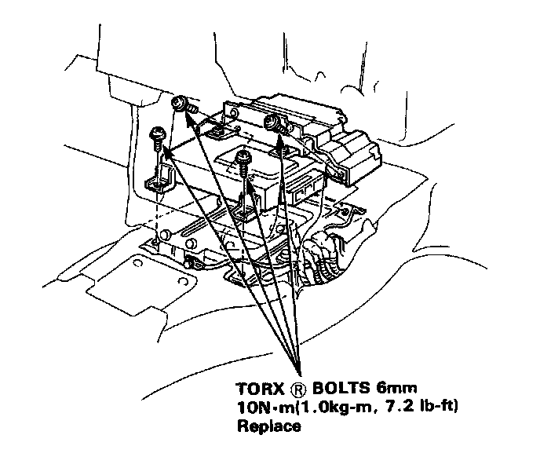
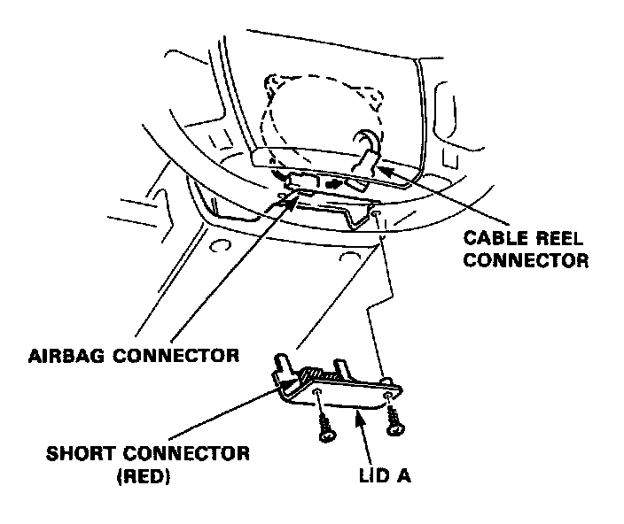

SRS Unit Assembly Installation
SRS Unit Assembly Installation
CAUTION: Be sure to install the SRS wiring so that it is not pinched or interfering with other car parts.
1. Install the SRS unit.

2. Connect the connectors to the SRS unit.
NOTE: To reinstall a connector, push it into position until it clicks; then close the connector lid.
3. Install the front console.
4. Disconnect the short connector from the airbag.

5. Connect the airbag 2-P connector and cable reel 2-P connector.
6. Attach the short connector to the lid A and attach the steering wheel.
7. Connect both the negative cable and positive cable to the battery.
8. After installing the airbag assembly, confirm proper system operation:
- Turn on the ignition to II; the instrument panel SRS light should go on for about 8 seconds and then go off.
- Confirm operation of radio/cassette player and front cigarette lighter.